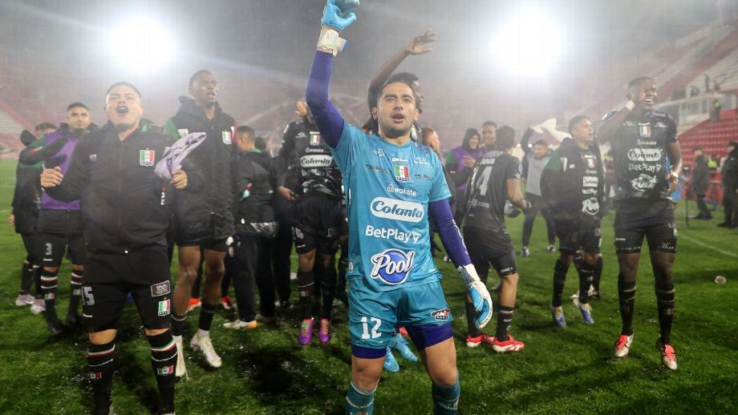

clasificación de Once Caldas fue la única buena noticia para el fútbol colombiano en las llaves de octavos de final de Conmebol Libertadores y Sudamericana 2025.
Por segunda vez consecutiva un equipo colombiano disputará los cuartos de final de Conmebol Sudamericana. El blanco blanco sacó del camino a Huracán con personalidad en Buenos Aires y es el único de los nuestros en competencia internacional.Se impuso en los dos compromisos de Manizales y Argentina con tres goles de Dayro Moreno. En la siguiente fase jugará contra Independiente del Valle.